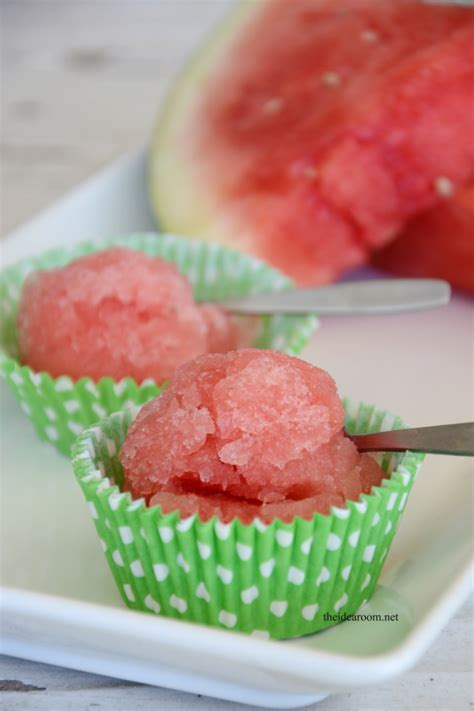

Melon Snow with lime yogurt

Description
a quick and easy incredible tasty dessert. Perfect for a little winter experience on hot summer days.
Ingredients
Snow
- 1 little watermelon (approx. 2kg)
- juice of half a lime
for garnishing
- 100g red currants
lime yogurt
- 4 tablespoons natural soy yogurt
- finely grated zest of one organic lime
- juice of half a lime
- 1 teaspoon maple syrup
- 2 pinches of chili flakes
- 1 sprig lemon balm